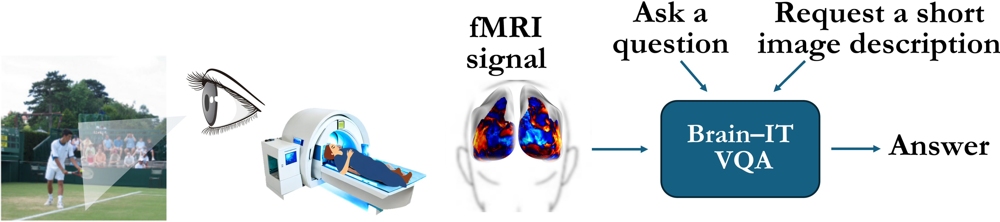
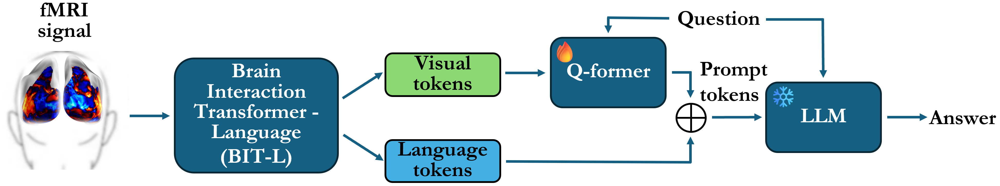
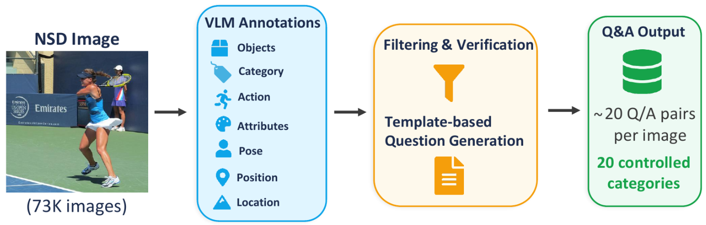
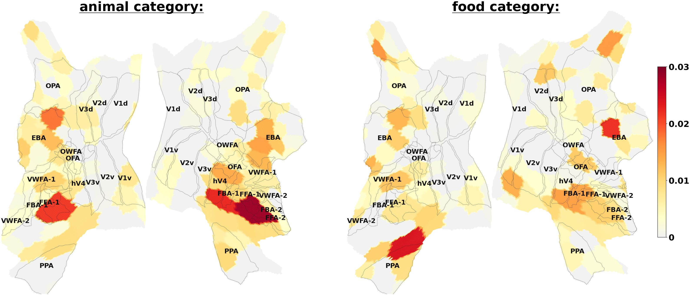

Abstract
Decoding visual content from fMRI signals recorded while a person views images, and specifically answering questions about the seen images, is a long-standing challenge. While significant progress has been made in recent years in visual question answering (VQA) from fMRI, performance remains limited. Moreover, although recent models can make increasingly accurate predictions, they have rarely been used as tools for understanding the structure of visual representations in the brain.
We present Brain-IT-VQA, a framework for visual question answering from fMRI. Building on the Brain Interaction Transformer (Brain-IT), our method decodes language tokens from brain activity and integrates them with a language model to answer visual questions. Our model substantially outperforms previous fMRI-based captioning and VQA approaches.
We further introduce NSD-VQA, a new dataset and benchmark for visual question answering from fMRI. Unlike existing image-fMRI VQA datasets, which typically provide only a few broad and weakly controlled questions per image, NSD-VQA provides on average 20 question-answer pairs per image across 20 controlled question categories that disentangle multiple levels of visual understanding.

Architecture
Brain-IT-VQA builds on the Brain Interaction Transformer (Brain-IT) for direct visual question answering from fMRI signals. The model converts brain activity into language-conditioning representations and combines them with a pretrained vision-language model to generate captions and answer natural-language questions about viewed images — without explicit image reconstruction.

NSD-VQA Dataset
NSD-VQA is a new benchmark for visual question answering from fMRI, built on the Natural Scenes Dataset (NSD). The dataset provides approximately 20 question-answer pairs per image across 20 controlled question categories, enabling fine-grained evaluation of which forms of visual and semantic information can be decoded from brain activity.

Decoding Contribution Analysis
Brain-IT-VQA enables analysis of how different brain regions contribute to different forms of visual and semantic understanding. Different question categories exhibit distinct spatial contribution patterns, suggesting that different forms of visual information rely on partially different neural representations. The figure below visualizes voxel-cluster contributions for the food and holding question categories.

Interactive Demo
Explore Brain-IT-VQA captioning and visual question answering predictions on held-out NSD test images choosing questions from the NSD-VQA dataset.
BibTeX
@misc{beliy2026brainitvqabrainsignalsanswers,
title={Brain-IT-VQA: From Brain Signals to Answers},
author={Roman Beliy and Matias Cosarinsky and Oliver Heinimann and Navve Wasserman and Michal Irani},
year={2026},
eprint={2605.29588},
archivePrefix={arXiv},
primaryClass={cs.CV},
url={https://arxiv.org/abs/2605.29588}
}